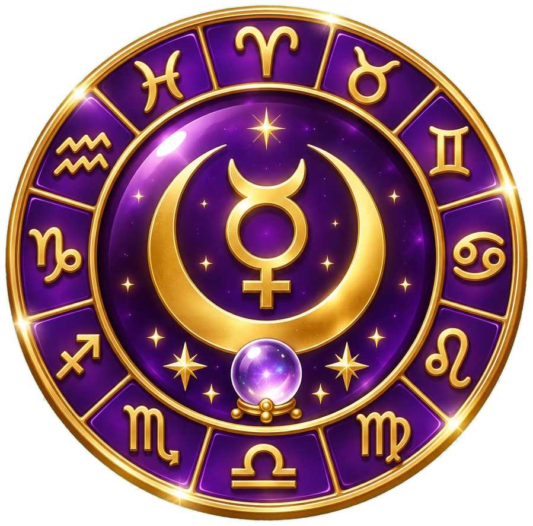
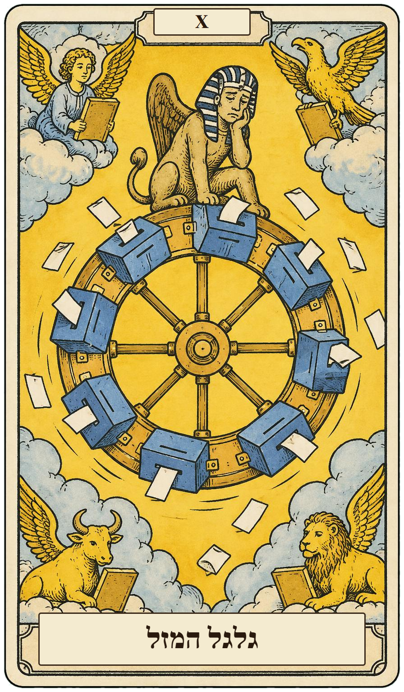

מהדורה 3 מורחבת!!
אני אמרתי
את זה כבר
בפברואר
המדריך המדעי לאסטרולוגיה ונומרולוגיה
כל מה שהפרשנים לא יגידו לכם
חינם!מתנה מדורית
רב מכר*
כולל טבלת
מזלות להדפסה!(לגזור לאורך הקו)
״היא תמיד צודקת. תמיד. גם כשלא.״– הגרוש השני שלה

דורית מרקורי
אסטרולוגית ונומרולוגית בכירה • 30 שנות ניסיון • רעננה
*במשפחה. הודפס במשרד של אבי, רעננה. אסור לצלם את הספר! (רק לשלוח לחברות) • לא למכירה